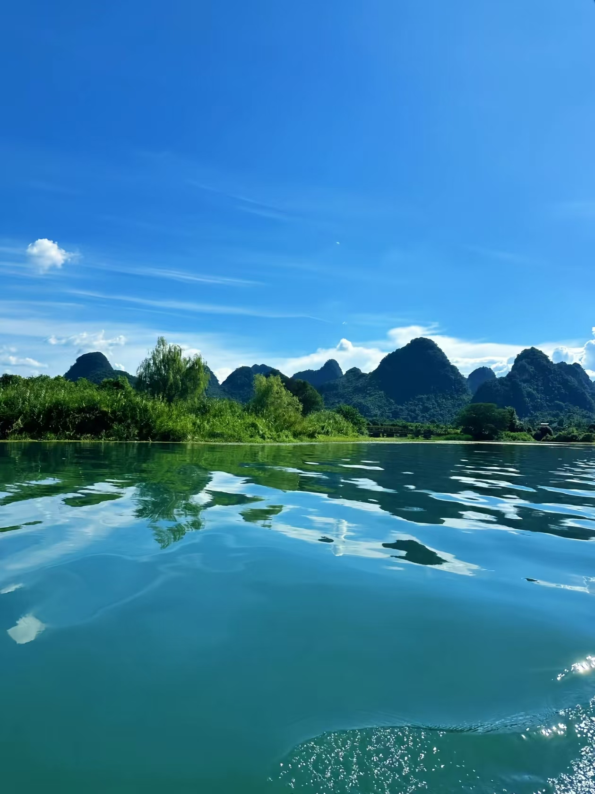
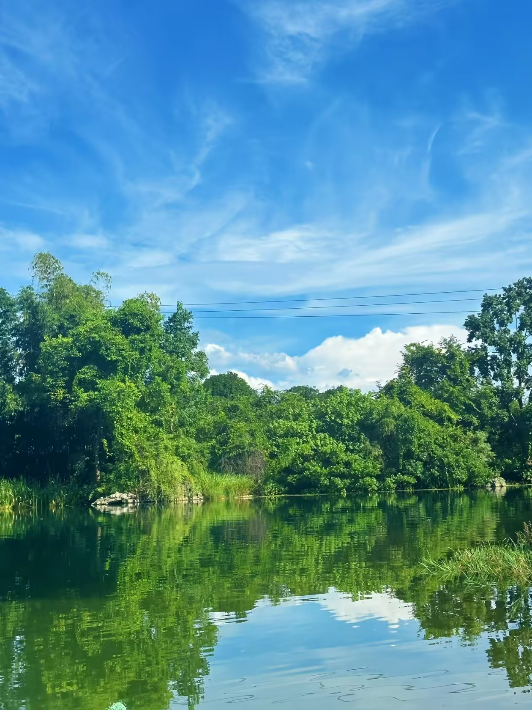
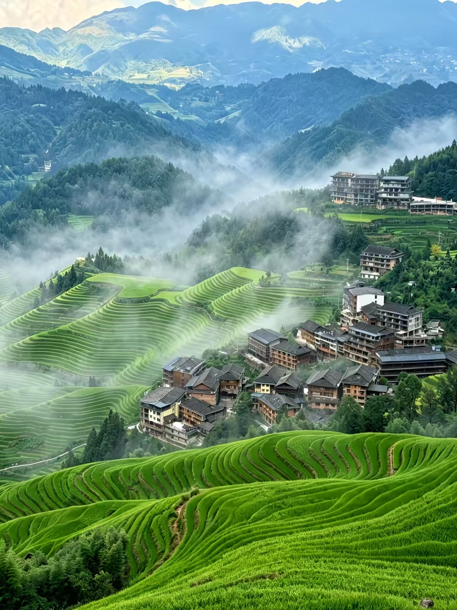

Guilin Travel Guide 2026: Li River, Yangshuo and How Not to Get Ripped Off
The first thing you notice in Guilin is the air — genuinely clean, faintly sweet, the kind that makes you slow down without deciding to. Then you look up and there are these improbable limestone peaks rising straight out of flat ground everywhere you look. The landscape is unlike anything else in China. It looks like a painting, specifically because Chinese landscape painting was largely based on this exact scenery for a thousand years.
It's also one of the most heavily touristed places in China, which means the scams are refined and the prices in tourist areas are creative. Neither of these things should stop you from going. You just need to know where the landmines are.
The Li River: What's Worth Doing

The Li River between Xingping and Yangdi — this is the stretch on the back of the 20 RMB note, and it earns it.
The Li River cruise is the centerpiece of any Guilin trip, but the full Guilin-to-Yangshuo route (about 4 hours) isn't necessarily the best use of your time. The most dramatic scenery is concentrated in the Xingping-Yangdi stretch — the section that appears on the back of the 20 RMB note. Shorter cruises focused on this section are better value and more visually concentrated than the full route.
The 20 RMB photo spot is real and worth finding. Navigate to "Wangwang Meishi Yuzhuang" restaurant near Xingping — from the riverbank there, you can hold up the banknote and line up the peaks with the painting. It's genuinely satisfying in a way that feels slightly ridiculous and completely worth doing.
Go in the morning or late afternoon. Midday light flattens everything and the reflections disappear. June rainy season is actually when Guilin looks its best — mist sitting in the valleys between the peaks, the whole landscape softened and atmospheric. Most tourists avoid the rain; the landscape rewards it.
Three-star boats run around ¥115 per person and are perfectly adequate. Four-star costs about 50% more for marginally better seating. Book through Trip.com or official channels — touts near the pier offering "cheap tickets" will either overcharge or take you on a non-official vessel. The official pier is clearly marked.
Yulong River: Better Than the Li River for Most People

The Yulong River near Yangshuo — quieter than the Li River, more intimate, and the bamboo rafting is genuinely one of the better experiences in the area.
The Yulong River runs near Yangshuo and most visitors underrate it relative to the Li River. It's narrower, slower, less crowded and somehow more beautiful in an intimate way. You take a bamboo raft — actually bamboo, pole-pushed by a local boatman — through still green water with karst peaks on both sides and rice paddies at the edges. It feels like the kind of thing you'd see in a film and assume doesn't exist in real life.
The standard route from Jinshanqiao Bridge to Jiuxian takes about 90 minutes. There are small weirs along the way with slight drops — nothing scary, just enough to get some spray. Go early, before 8am if possible. Peak season queues at the launch point can run two to three hours by mid-morning.
Only use the official Jinshanqiao-Jiuxian route with licensed operators. Unofficial bamboo raft operators have no safety oversight and will often add charges mid-trip. If water levels are low, some sections can run aground — check conditions before booking.
Xianggong Hill Sunrise
If you're willing to leave your hotel at 4am, Xianggong Hill is one of the best viewpoints in China. You're looking down at the first bend of the Li River from above, with karst peaks receding into the distance in every direction. At sunrise, when there's mist in the valleys, it looks exactly like every Chinese landscape painting you've ever seen except you're actually there.
Drive or take a taxi — about 30 minutes from central Guilin. The climb to the viewpoint takes around 15 minutes. Wear shoes with grip, bring a torch, and bring a jacket — the summit gets cold and windy before dawn regardless of the season. In peak season, arrive early to get a position at the front of the viewing area.
Yangshuo: The Right Way to Use It

Yangshuo has become heavily commercialized but the surrounding countryside is still extraordinary. The town is best used as a base, not a destination in itself.
Yangshuo's West Street is the tourist center and completely fine to walk through once. It's also overpriced and increasingly indistinguishable from tourist streets everywhere in China. Don't stay on West Street, don't eat on West Street, don't buy anything on West Street. Use Yangshuo as a base for the surrounding countryside and find restaurants two streets back from the main drag.
Renting an electric bike or bicycle and riding the Ten Mile Gallery (Shili Hualang) road is genuinely one of the better half-days you can spend in China. The road runs past Moon Hill, the Big Banyan Tree and rice paddies with karst peaks as backdrop. Electric bikes run ¥30-50 a day. Go late afternoon when the light is good and the tour groups have left.
Food Worth Finding

Guilin rice noodles — the broth is made from 36 spices and simmered for hours. The noodles themselves are almost secondary.
Guilin rice noodles are what locals eat for breakfast, and the morning is genuinely when they're best — the broth is freshest, the toppings are fully stocked, the shops are busy. The broth is the point: slow-cooked with 36 spices, deeply savory in a way that's hard to describe precisely. Local order is "dry mix" (gan lao) with bone broth on the side — the noodles come without liquid, you mix in the toppings and sauce, then drink the broth separately. Lao Dongjiang and Chongshan are reliable spots. Budget ¥8-15 per bowl.
Yangshuo beer fish is the local specialty worth having once. Fresh river fish — ask for sword-bone fish (jian gu yu) if available, fewer small bones — cooked with beer, tomatoes and green peppers. The flesh comes out tender and the sauce is genuinely good over rice. Xie San Jie and Dashi Fu are frequently recommended; avoid the places on West Street itself and you'll pay roughly 30% less for the same quality. Priced by weight, budget ¥60-80 per person.
Gongcheng oil tea is worth trying if you're adventurous. It's a Yao minority drink — tea leaves and ginger pounded and boiled into something intensely bitter, served with fried rice crackers, peanuts and fried dough to balance it out. It's an acquired taste that takes about half the cup to acquire. Try it at Yaojia Youcha Guan on Longyin Road.
Guilin specialty products — osmanthus cake, rice wine, dried fruit — cost about half the price at Lequn Market or large supermarkets in the city compared to tourist street prices. Osmanthus cake runs ¥12-15 per box at a supermarket vs ¥38 near a scenic area entrance. The product is identical.
Scams to Know About
Guilin has a well-developed tourist economy, which means the scams are polished. The most common one is the budget tour package — anything advertised as ¥199 for six days or ¥99 for four days is a shopping tour. The itinerary will include seven mandatory shopping stops. You will be pressured to buy overpriced jade, silk and traditional medicine. The scenic spots get maybe 30 minutes each. Legitimate no-shopping small group tours run ¥800+ per person for three days. If the price seems too good, it is.
Airport and train station touts offering "¥10 Li River tours" or cheap private cars are either taking you to shopping stops first or will add charges once you're in the vehicle. Use the official airport bus (¥20 per person), DiDi, or pre-booked transfers.
Minority village "cultural experiences" marketed near tourist sites are almost universally shopping operations. If you want to see actual minority culture, Longji Rice Terraces has genuine Yao and Zhuang villages without a mandatory purchasing component.
On the river: non-official bamboo raft operators may add charges mid-trip. The official Yulong River route is clearly marked with licensed operators — if someone approaches you away from the official launch point, decline.
Getting Around
Guilin city is manageable by DiDi or taxi. For Yangshuo, high-speed trains run from Guilin North Station — about 30 minutes and far more reliable than the bus. Official coaches between Yangshuo and Xingping run ¥20 per person and are straightforward.
Within Yangshuo, rent a bicycle or electric bike. The roads around the countryside are flat enough that cycling is genuinely pleasant rather than effortful, and it's the right pace for the landscape.
Best Time to Visit
April to June is the best period — warm, green, and the rainy season mist makes the landscape look extraordinary. July and August are peak tourist season: hot, crowded and expensive. September and October are also good — less rain, comfortable temperatures, slightly smaller crowds than summer. Winter is cool and quiet, the landscape loses some color but the crowds drop significantly.